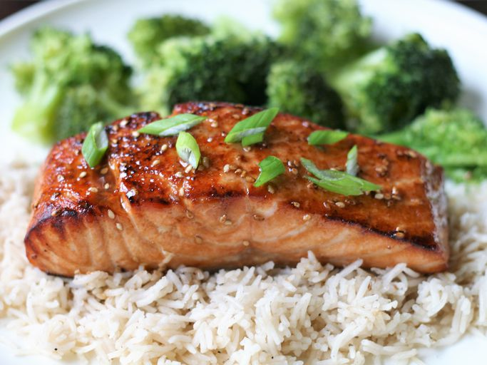

Teriyaki Salmon

Description:
This teriyaki salmon, with its irresistible sweet and savory marinade, will quickly become a staple in your dinner rotation. It's sure to please even the pickiest eaters at your table
Ingredients:
- Sesame oil
- Lemon juice
- Soy sauce
- Brown sugar
- Sesame seeds
- Spices
- Salmon
Steps
- Make the marinade on the stove, then set aside 1/4 cup for basting.
- Marinate the salmon in zip-top bags in the refrigerator for up to two hours.
- Broil the salmon until it flakes easily, brushing with the reserved marinade as needed.